Library / Web and App Design Styles
67 keywords in this category, each one tested and explained in plain language.
Pick keywords as you browse, then press Copy for AI and paste into ChatGPT, Claude or any AI. Copy keywords gives a plain list for Midjourney or Seedance.
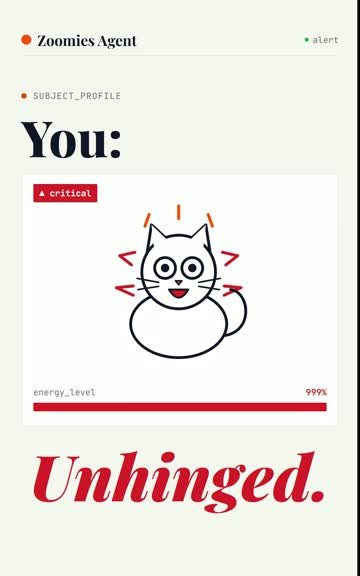
A calm, chat-first screen where you tell an AI helper what you want and it does the steps for you.
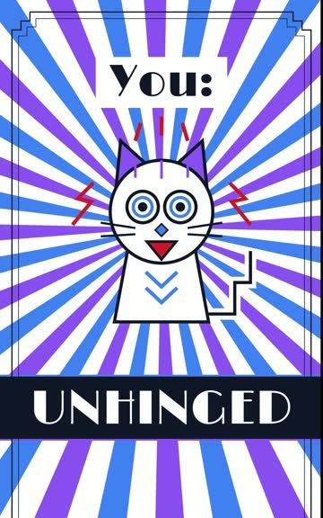
A bold, gallery-like site with high contrast, daring color choices and showy lettering in the Limelight font.
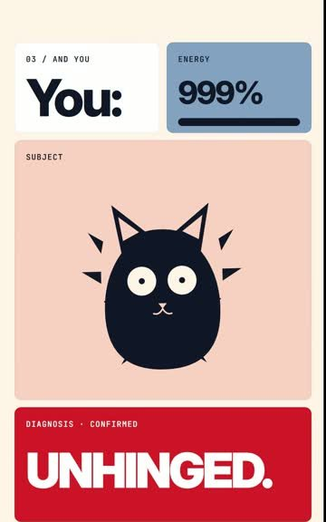
Content sits in a grid of rounded boxes of different sizes, like the little compartments in a bento lunch box.
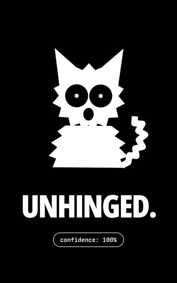
An almost empty, edge-to-edge white screen where the type does all the work.
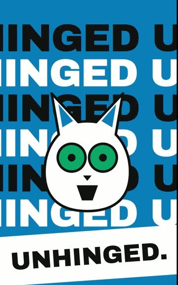
Huge, heavy headlines in Archivo Black, strong contrast and big confident blocks of color that fill the screen.
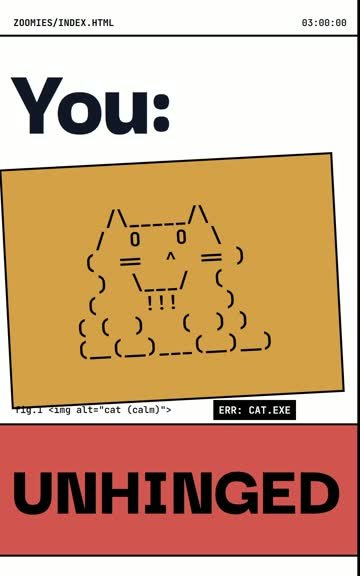
A raw, deliberately rough site inspired by bare concrete buildings: plain boxes, harsh lines, odd layouts and almost no decoration, set in Darker Grotesque.
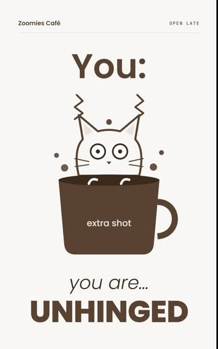
A cozy coffee shop feel with warm browns and creams, soft rounded Poppins type and clean, relaxed layouts.
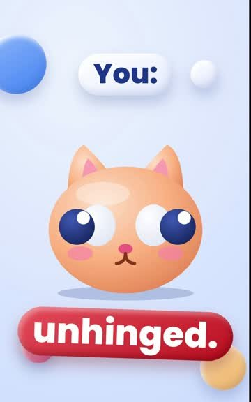
Soft, puffy buttons and cards that look shaped from colorful modeling clay, with rounded edges and gentle shadows.
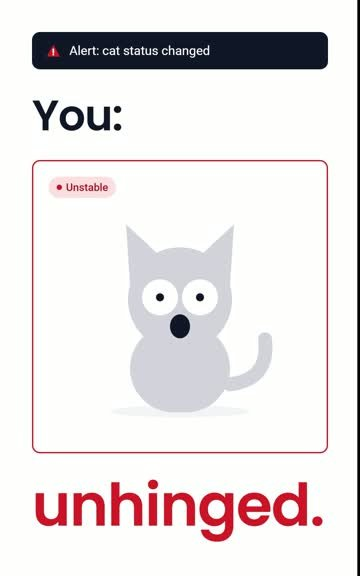
Lots of empty space, easy-to-read Roboto and Poppins type and only a few colors, so nothing clutters the page.
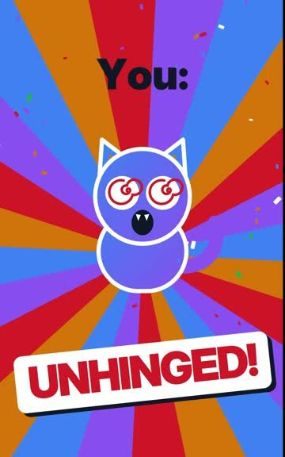
Bright, high-contrast colors and gradients (smooth blends from one color to another) across buttons, cards and backgrounds.
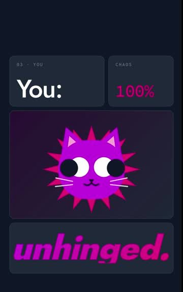
Today's tidy modern look: grids of boxes, an optional dark mode, clean Jost type and fast, easy-to-use layouts.
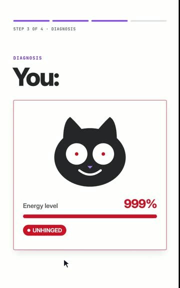
A simple, no-distraction page that leads visitors step by step toward one action, like signing up or buying, with clear headlines, reviews and big buttons.
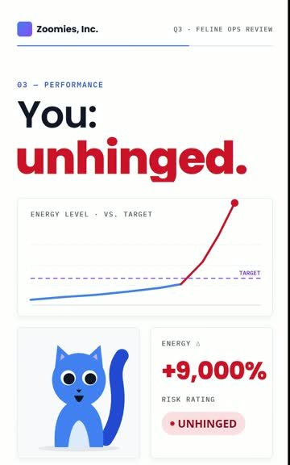
A professional, orderly site with structured grids, simple layouts and consistent Open Sans and Poppins type, like you see on big company sites.
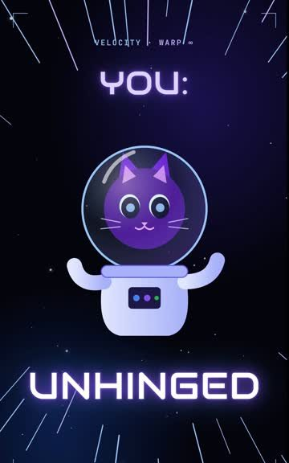
A sci-fi site set in deep space, with dark backgrounds, glowing neon accents, starry depth and the wide, futuristic Audiowide font.
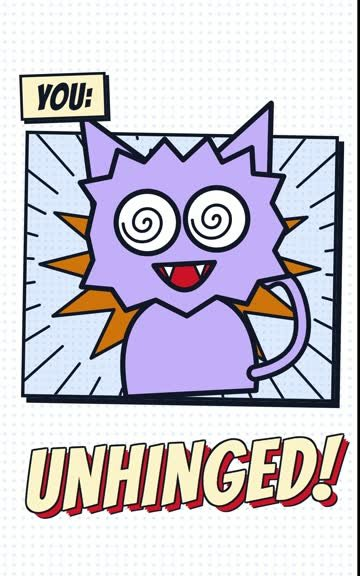
A loud, playful landing page with cartoon characters, comic-book Bangers headlines and bold graphic shapes.
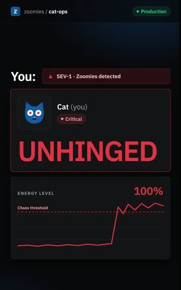
A dark-themed workspace dashboard with neat modular panels, frosted glass-like cards and clear charts, set in IBM Plex Sans.
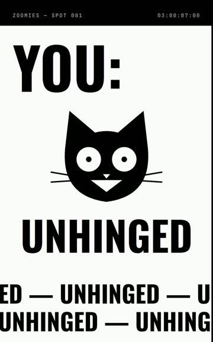
A high-end, mostly black and grey site with tall, bold Oswald headings and a powerful, expensive feel.
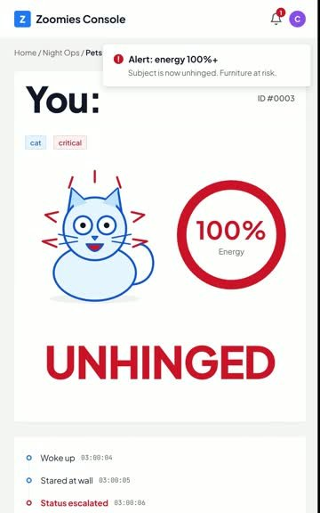
A tidy, businesslike screen packed with tables, forms and filters, all lined up in a strict, consistent grid.
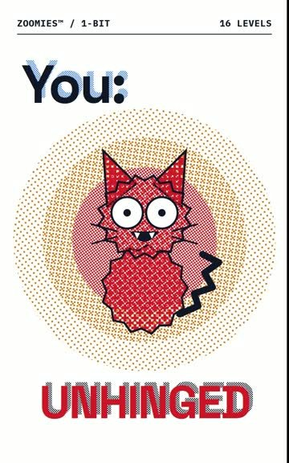
Images and shading made from tiny dot patterns using only a few colors, like an old computer screen or newspaper print.
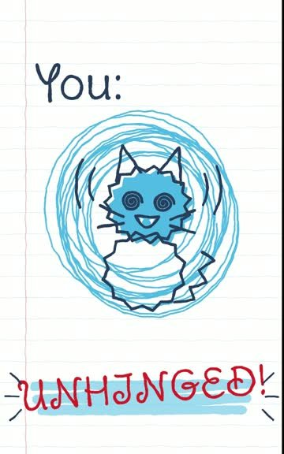
A hand-drawn site full of little sketches, wobbly lines and handwritten Delius Swash Caps lettering, like notes in a school notebook.
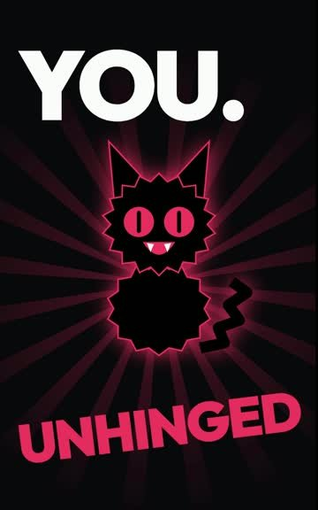
A theatrical site with strong contrast, huge images, unusual layouts and big Outfit headlines that feel like a movie poster.
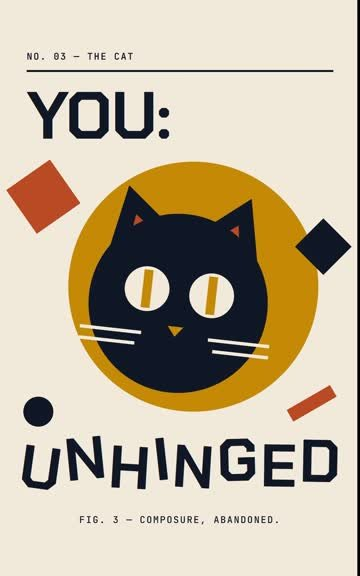
A warm, confident site that looks like a graphic poster, alternating cream and burnt orange sections with an amber accent and bold Chakra Petch headings.
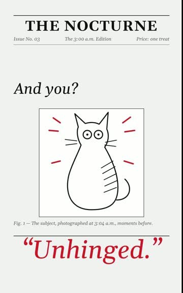
A magazine-style site with refined Gelasio serif type (letters with small feet at the ends), tidy columns and a calm, elegant reading feel.
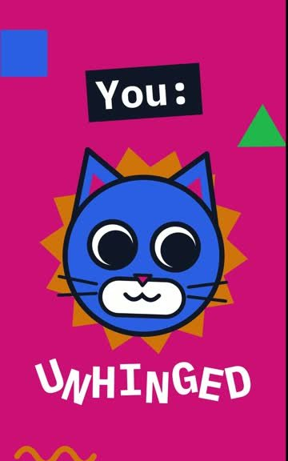
A lively, personality-packed site with bold colors, playful graphics and shifting layouts, all set in the typewriter-like IBM Plex Mono font.
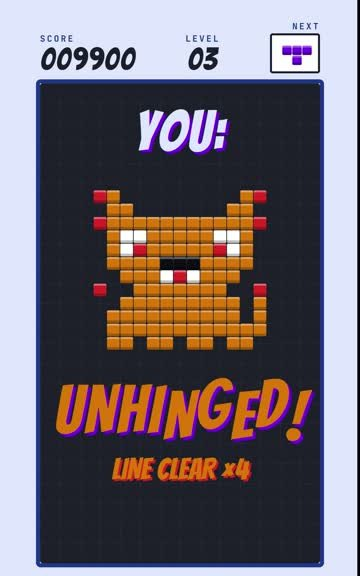
A classic block-puzzle game look with chunky colorful tiles stacking up, bold comic Bangers headings and compact, high-energy layouts.
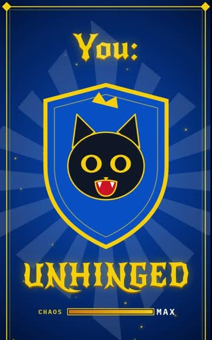
A rich, game-inspired site with deep jewel colors, ornate New Rocker lettering and grand, adventure-style visuals like a fantasy game launcher.
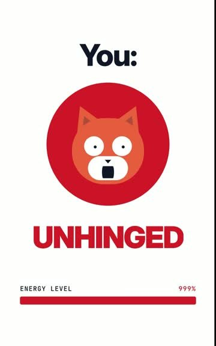
Everything is flat and two-dimensional: no shadows, no shiny effects, no textures, just bright solid colors and clean Inter type.
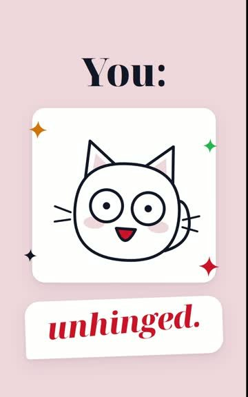
A gentle, welcoming site with rounded corners, plenty of breathing room and soft pastel colors, with headings in Noto Serif Display.
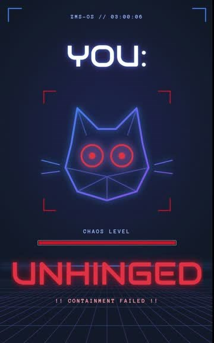
A sleek, forward-looking site with tech-style Audiowide headings, clean modern layouts and a sharp, inventive feel.
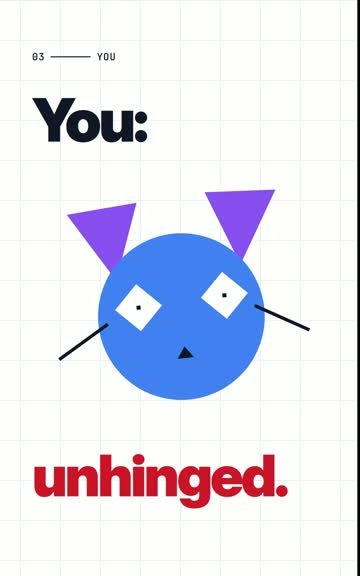
A tidy site built from precise circles, triangles and rectangles, with neutral colors and clean Inter type that stays out of the way.
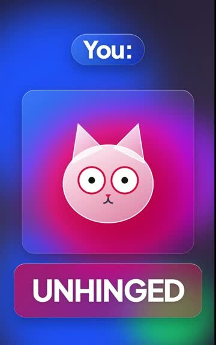
Cards and panels that look like frosted glass: see-through, softly blurred, with thin glowing edges floating over colorful backgrounds.
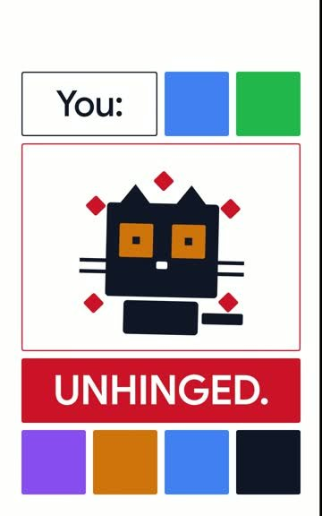
A graceful, refined site with delicate thin type, a minimal palette and polished layouts that feel quietly sophisticated.
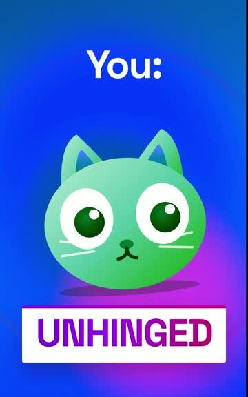
Smooth blends of color washing across backgrounds, buttons and shapes, with Montserrat and Space Grotesk type for a modern, playful sense of depth.
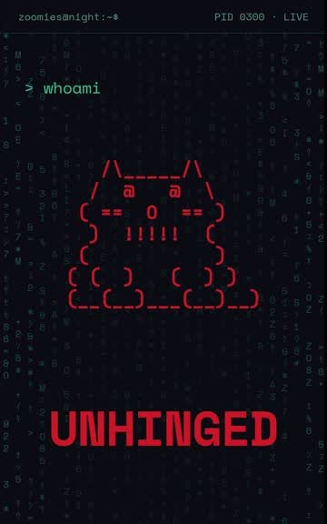
A dark-only, hacker-movie look with glowing green code-like text, monospace type (every letter the same width), hairline borders and dense screens like a trading terminal.
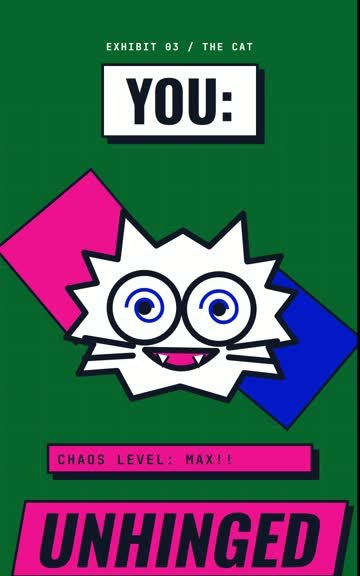
A site that feels like walking through an interactive museum exhibit, all on one continuous deep green canvas with crisp white type, storytelling, animation and little game-like moments.
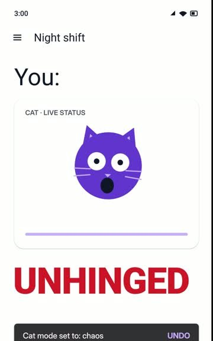
A tidy app look built from flat sheets stacked in layers, each with a soft shadow, plus colors that follow one theme and small smooth motions when you tap.
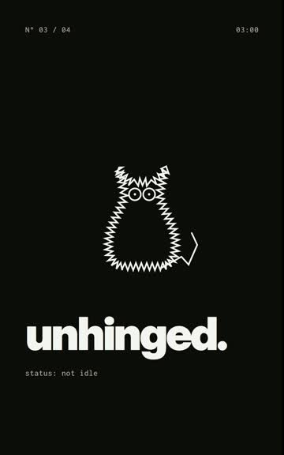
A stripped-back site with lots of white space, clean type and very little color, so your eye goes straight to what matters.
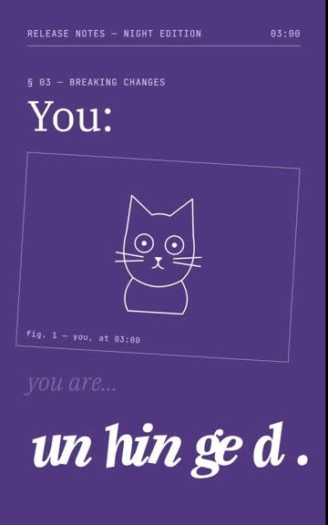
A polished, up-to-date site with elegant IBM Plex Serif type, a small palette and clean, calm layouts.
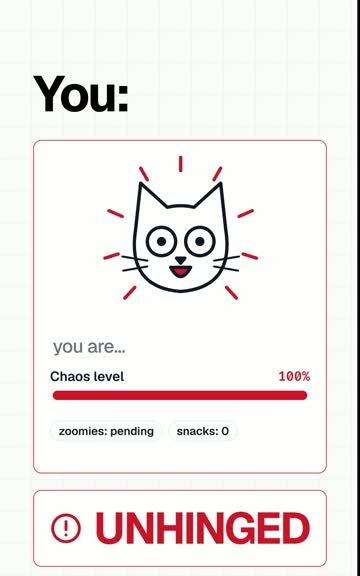
A minimal black, white and grey app look made of clean ready-made pieces like buttons, cards and menus, set in the crisp Geist font.
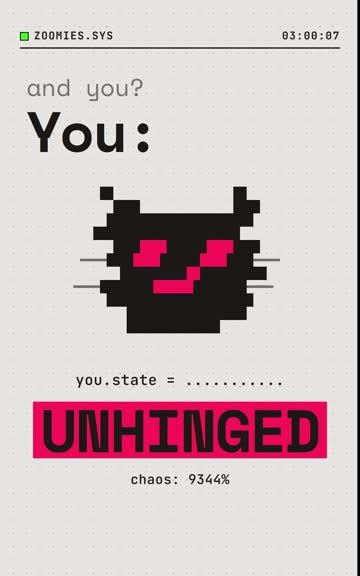
A compact, high-contrast site set entirely in Space Mono, a typewriter-like font where every letter takes the same space, with a dark, hacker-chic mood.
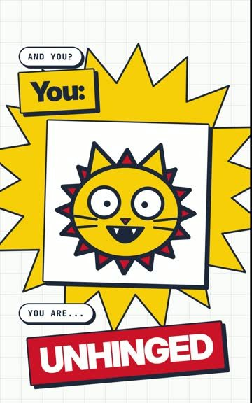
A friendlier take on brutalism: thick black borders, chunky offset shadows, bright accent colors and raw, boxy layouts on warm off-white backgrounds.
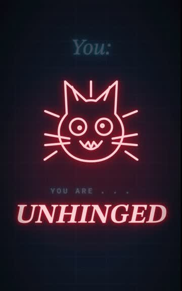
Electric glowing colors like neon signs, bright pinks, blues and greens on dark backgrounds, with bold contrast that pops off the screen.
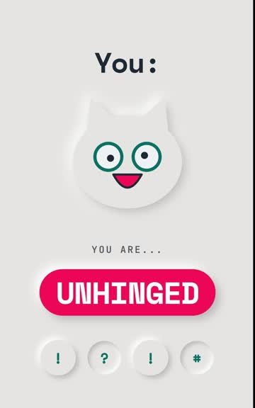
Soft buttons and cards that look pressed into, or pushed out of, the same smooth surface, using light and dark shadows on a single background color.
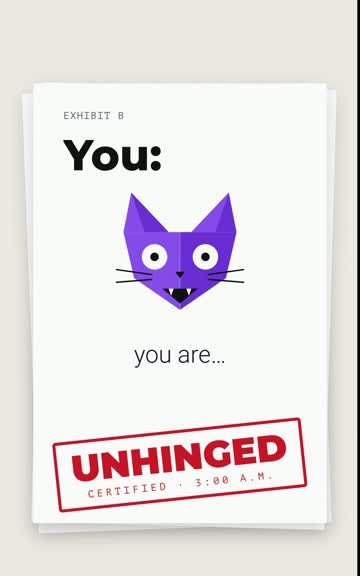
A site that feels like real printed paper, with soft paper grain, very few colors and a clean mix of Montserrat and Roboto type.
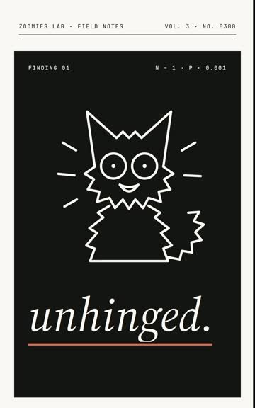
Pages that look printed on warm ivory parchment, with near-black ink, calm editorial type and just one earthy clay accent used sparingly.
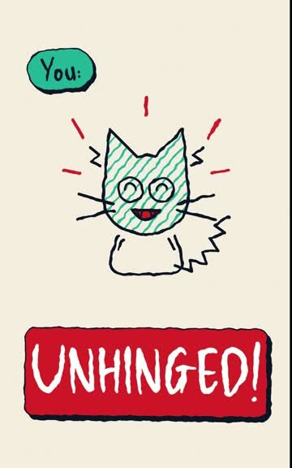
A friendly hand-drawn site that looks like pencil drawings on warm cream paper, with soft teal accents, handwritten headings, dashed card outlines and chunky pencil-style shadows.
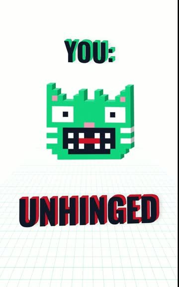
A site that breaks out of flatness with isometric views (3D seen from a tilted angle), vanishing points and stacked layers that pull your eye through the page.
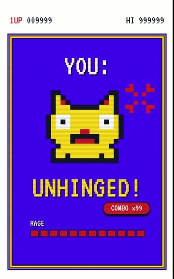
A playful arcade game interface built on the VT323 pixel font, sharp right-angle corners, chunky buttons that press down into solid blocks, and cards trimmed with rainbow shadows like an arcade cabinet.
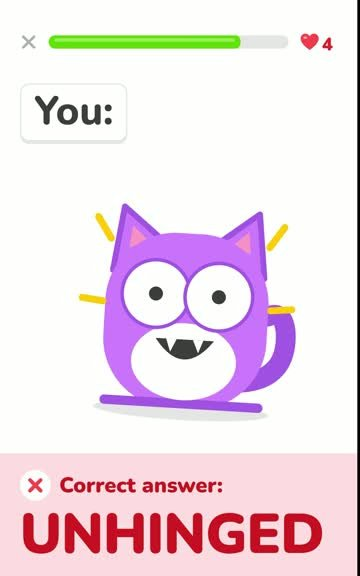
A bright, friendly app look with rounded shapes, chunky buttons with a thick bottom edge so they look pressable, cheerful mascot drawings and round Nunito type.
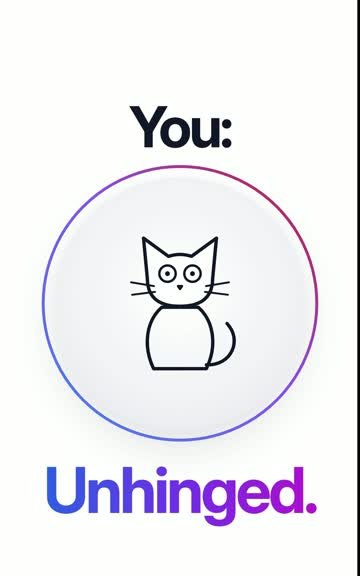
A refined product showcase with precise spacing, crisp Inter type, huge clean product photos and a polished, quietly expensive feel.
A site laid out like a printed book or magazine, with neat columns, a clear grid and strong Oswald headlines over friendly Nunito body text.
A polished, business-ready site with modern Poppins type, structured sections and a trustworthy, organized look.
A high-energy site with thick borders, striking geometric shapes, vivid oranges and other strong colors, and showy Limelight headlines that feel full of motion.
A clean app control center with a purple theme, navigation along the top bar, tidy cards and quick, developer-friendly screens.
A carefully curated, minimal site with elegant Playfair Display serif type and understated, soft colors.
A classic arcade game look with chunky Press Start 2P pixel lettering, dotted borders like a maze of little pellets, and bright, high-contrast colors on black.
A throwback site with vintage-inspired Macondo lettering, bold old-school color pairings and nostalgic touches like badges and stars.
A joyful site that looks like a two-color risograph print (a grainy ink printer loved by zine makers), with warm off-white paper, fluorescent pink buttons and deep blue headings with a slightly offset print shadow.
Screens that copy real objects, like leather notebooks, wooden shelves and metal knobs, with textures and 3D shading so everything feels touchable.
A modern, minimal site with clean lines, a small planned color palette, subtle hover effects and very even spacing.
Generous white space, even padding and a steady grid make every section feel airy and easy to read.
A cheerful, cartoon-like site inspired by children's picture books: warm cream backgrounds, big bold headings, bright color blocks, thick black outlines and very rounded shapes.
A site that tells a story as you scroll, mixing big visuals, short punchy writing, Abril Fatface headlines and gentle animations that carry you from one moment to the next.
A sun-baked, earthy site on warm cream backgrounds, with ink-brown headlines in DM Serif Display and a single clay-orange accent.
A lively, colorful site with bold, playful Fascinate headings, warm accent colors and lots of visual energy.
A nostalgic site that borrows from the 1950s to the 1990s, with grainy textures, faded retro colors, touches that copy real objects and Silkscreen pixel lettering.
A clean, high-contrast workspace where you drag and drop blocks to connect data, apps and steps into an automatic workflow, with structured panels and Ubuntu and Oswald type.